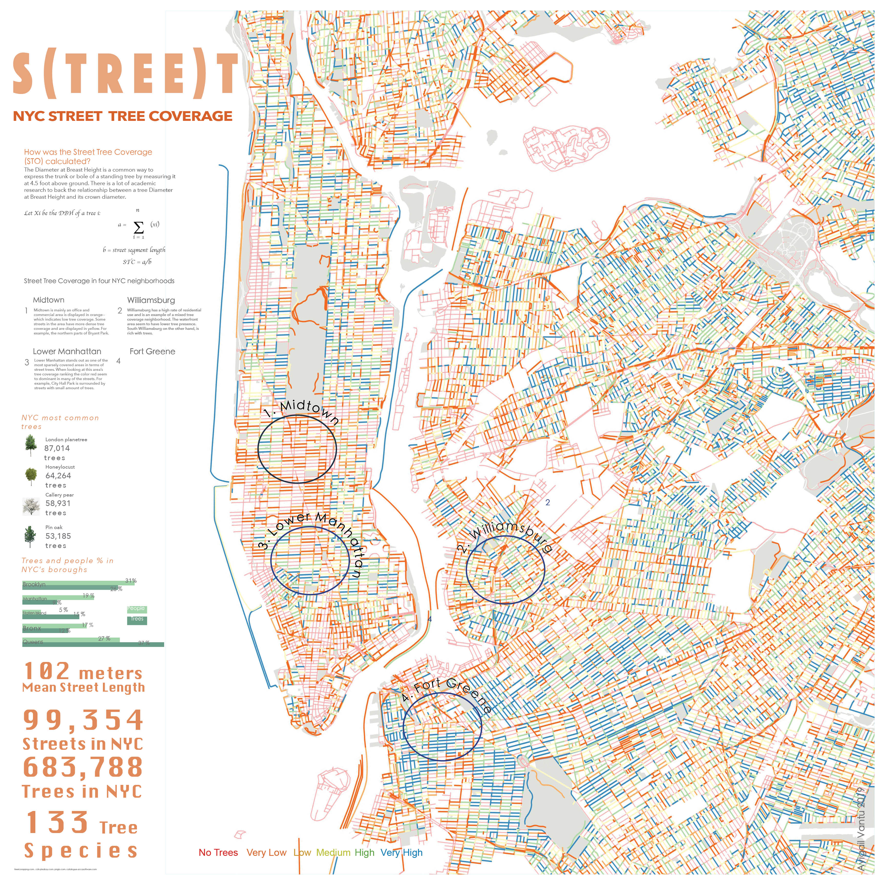

The presence of dense tree canopy is important to creating safe and pleasant streets. Consequently, urban designers in cities aspire to densify tree coverage. To do so they need to prioritize areas in need for new trees.
To detect different tree canopy levels across NYC a street tree coverage indicator was developed using NYC's open data. The Diameter at Breast Height (DBH) for each tree in NYC was used as an estimation of the a tree crown diameter. To get a street level score DBH’s were summed over for each street segment, and then divided by the street segment length. In the map, the scores are displayed using five equal probabilities to represent “very low” to “very high” street tree coverage groups.
Street designers are usually informed on which streets need capital investments using methods like surveys and observations. In addition, most cities have limited resources that they are able to allocate for street improvements. A data-driven approach to street design, such as this, could lead to planning safer streets and a more equitable allocation of funds between the city’s neighborhoods.
Using this street tree coverage metric planners and designers can accurately understand the distribution of tree canopy in the city. They can decide where to plant new trees and prioritize areas with low/very low tree coverage.
The street tree coverage was developed in order to demonstrate how big data can help support current public space research methods. This work was presented at the 2019 D4GX conference along with the Using Big Data to Support Public Space Research book chapter outline co-wrote by Dr. Kristen Day and myself. The design of this poster was partly done as part of my Data Vis & Info Aesthetics Parsons class project.